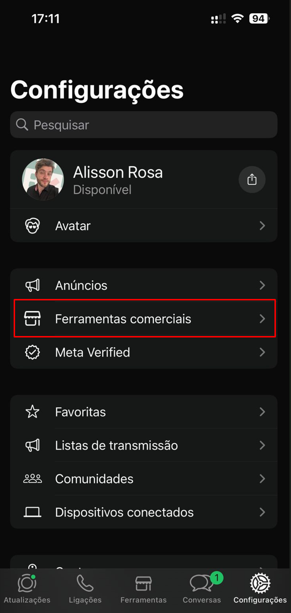
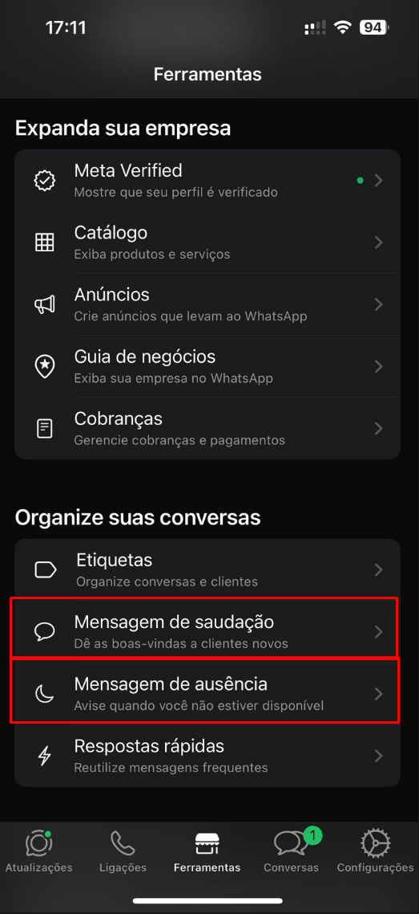
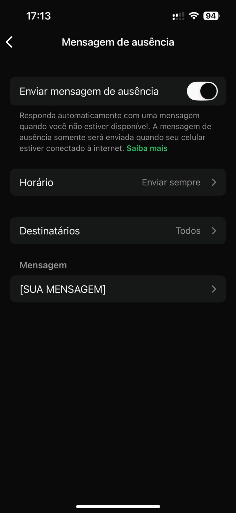

✨ Toque de Ouro
Atendimento que Encanta e Converte: O Método C.A.R.E. para transformar cada interação em uma experiência memorável.
A Base do Sucesso - Atendimento Humanizado
A fundação de uma clínica próspera não está nos equipamentos de última geração, mas na forma como cada cliente é tratado. O atendimento humanizado é a estratégia central que sustenta todas as outras.
O Atendimento Humanizado Deve Ser o Coração da Sua Clínica
Você já percebeu que suas clientes não ficam apenas pelo resultado estético? Elas ficam pela experiência que recebem. Um atendimento frio, desorganizado ou demorado pode afastar até mesmo clientes que adoram os seus tratamentos. Elas não compram apenas um procedimento; compram a promessa de se sentirem melhores, mais confiantes e cuidadas.
A estética humanizada, como destaca a Clinicorp, coloca o paciente no centro do atendimento, valorizando sua essência e particularidades. É sobre enxergar além da queixa e conectar-se com a pessoa por trás dela.
O Método C.A.R.E.: Acolher, Guiar e Encantar
O método C.A.R.E., é um framework simples e poderoso para estruturar um atendimento que vai além do básico. Ele se baseia em três pilares:
- Acolher: Demonstrar empatia e atenção genuína em cada mensagem e interação. Acolher é fazer a cliente sentir que foi ouvida e que suas preocupações são válidas. A escuta ativa é uma ferramenta essencial aqui, como aponta o Instituto Matheus Arantes, pois envolve perceber nuances emocionais e o que não é dito verbalmente.
- Guiar: Explicar procedimentos, benefícios e cuidados de forma clara, personalizada e transparente. Guiar é transformar a ansiedade da cliente em segurança, mostrando que você é a especialista que pode conduzi-la ao resultado desejado.
- Encantar: Transformar "dores" (inseguranças, problemas estéticos) em "desejos" (a visão de um resultado positivo). Encantar é superar as expectativas, seja com um pequeno gesto, uma mensagem de acompanhamento ou uma personalização inesperada no tratamento.
Exemplo Real: A Transformação de Amanda
Amanda, uma esteticista de São Paulo, vivia ansiosa com as mensagens do WhatsApp. Achava que, se não respondesse imediatamente, perderia clientes. Ela passava o dia pulando entre atendimentos presenciais e o celular, sentindo que não fazia nenhum dos dois com 100% de atenção.
Aplicando algumas técnicas simples de automação e comunicação humanizada (que veremos nos próximos capítulos), ela viu uma mudança radical:
- Clientes mais compreensivas: Elas entendiam que Amanda estava em atendimento e aguardavam a resposta personalizada.
- Aumento de indicações: As clientes começaram a indicar amigas, elogiando não só o resultado, mas o "cuidado e a organização" da clínica.
- Percepção de valor: Sentiam que sua clínica era confiável e acolhedora, um lugar seguro para cuidar da autoestima.
Se a Amanda conseguiu, você também pode!
A Psicologia por Trás do Encantamento: Construindo Confiança e Segurança
Procedimentos estéticos, por mais simples que sejam, podem gerar ansiedade. A cliente está depositando em você não apenas seu dinheiro, mas sua confiança e sua autoestima. Um atendimento humanizado atua diretamente na redução dessa ansiedade. Como ressaltado em uma análise sobre a experiência do paciente na estética, o alinhamento de expectativas é uma das maiores ferramentas para evitar frustrações.
Quando você pratica a escuta ativa, explica cada etapa e demonstra empatia, o cérebro da cliente libera ocitocina, o "hormônio da confiança", fortalecendo o vínculo entre vocês. Essa conexão emocional é o que diferencia um serviço transacional de uma experiência transformadora.
✍️ Desafio Prático
Observe a experiência que você proporciona hoje. Anote pelo menos uma ação que você pode implementar amanhã para transformar a percepção de cuidado da sua cliente. Pode ser algo simples como usar o nome dela na saudação ou enviar uma mensagem de acompanhamento um dia após o procedimento.
Quebrando Paradigmas Limitantes Sobre Atendimento
Às vezes, o maior obstáculo para encantar clientes não está nas ferramentas que você usa, mas nas ideias que você acredita sobre atendimento. Muitas profissionais, especialmente as que trabalham sozinhas, carregam crenças que, na prática, apenas as sobrecarregam e limitam o crescimento da clínica.
Neste capítulo, vamos identificar e desconstruir essas barreiras, mostrando que é possível oferecer um atendimento de excelência sem estar disponível 24 horas por dia, sem perder a qualidade e, principalmente, sem sentir culpa. Prepare-se para liberar tempo, reduzir a ansiedade e manter suas clientes encantadas, mesmo quando não estiver online o tempo todo.
Paradigma 1: "Se eu não responder na hora, perco a cliente"
A Realidade: É verdade que a velocidade importa. Um estudo citado no e-book aponta que nos primeiros 5 minutos, cerca de 32% das pessoas desistem e procuram outra profissional. Outros dados são ainda mais enfáticos: responder em até 5 minutos aumenta a chance de fechamento em até 21 vezes. No entanto, "responder rápido" não significa "responder pessoalmente e de forma completa imediatamente". A cliente busca, antes de tudo, um sinal de que foi notada.
🚀 Estratégia Avançada: Atendimento Assíncrono Gerenciado
Vá além da simples mensagem de ausência. Estruture um "atendimento assíncrono gerenciado", que acolhe, qualifica e gerencia as expectativas desde o primeiro segundo.
- Resposta Imediata Automatizada: Use o WhatsApp Business ou plataformas de automação para enviar uma mensagem de acolhimento que também informa o seu horário de atendimento personalizado.
- Triagem Inicial: A mensagem automática pode incluir um menu simples para qualificar a cliente, organizando suas respostas e otimizando seu tempo.
💡 Script Avançado de Acolhimento:
"Olá, [Nome da Cliente]! Que alegria receber seu contato aqui na [Nome da Clínica] ✨. No momento, estou em um atendimento dedicado a outra cliente, mas sua mensagem é minha prioridade.
Nosso horário de atendimento personalizado no WhatsApp é de [Segunda a Sexta, das 9h às 18h], e te responderei em detalhes assim que finalizar aqui, ok?
Para agilizar, me diga o que você busca:
1. Agendar um tratamento
2. Saber sobre preços e serviços
3. Outras dúvidas"
Passo a passo (WhatsApp Business)
Antes de começar, lembre que você precisa usar o WhatsApp Business para ter acesso a essas ferramentas. A seguir, você encontrará o passo a passo para configurar tanto a Mensagem de Saudação quanto a Mensagem de Ausência, usando as estratégias deste e-book.
Passo 1
Abra o WhatsApp Business e vá até Configurações.

Passo 2
Dentro das configurações, toque em Ferramentas comerciais.

Passo 3
Role a tela até encontrar as opções Mensagem de saudação e Mensagem de ausência.

Passo 4
Toque em Mensagem de saudação, marque a opção Enviar mensagem de saudação e, no campo Mensagem, escreva sua mensagem de encantamento usando tudo o que você aprendeu aqui no e-book.

Passo 5
Agora, abra Mensagem de ausência, marque a opção Enviar mensagem de ausência, configure os horários em que ela deve ser enviada e, no campo Mensagem, escreva sua mensagem personalizada que vai acolher a cliente mesmo quando você não estiver disponível.

Paradigma 2: "Ninguém atende meus clientes tão bem quanto eu"
A Realidade: Esse pensamento, embora nascido do zelo pela qualidade, é uma armadilha que impede a escalabilidade. É o que muitas vezes leva ao burnout. A verdade é que processos bem estruturados e automações inteligentes não diminuem a qualidade; eles a potencializam, garantindo consistência em cada interação, como se fosse você mesma respondendo.
🚀 Estratégia Avançada: Crie seu Manual de Comunicação ("Brand Voice")
Em vez de depender da sua memória, crie um "Manual de Comunicação e Atendimento". Este documento, como sugerido por especialistas em protocolos de atendimento, é o DNA da sua comunicação e deve definir:
- O Tom de Voz da Marca: É acolhedor? Sofisticado? Divertido? Defina 3-5 adjetivos e dê exemplos. (Ex: "Nossa voz é Acolhedora, Especialista e Leve").
- Templates para Situações Comuns: Reúna todos os scripts (boas-vindas, agendamento, objeções, pós-atendimento) em um só lugar.
- Guia de Emojis: Quais emojis usar para manter a consistência? ✨💖😊 são geralmente seguros e positivos.
- Protocolo de Resposta: Qual o fluxo para cada tipo de pergunta? (Ex: 1º Qualificar a necessidade, 2º Apresentar a solução, 3º Apresentar o preço e agendamento).
Com este manual, você pode treinar uma futura secretária ou configurar uma IA de atendimento (como a Agenda Magnética) para responder exatamente como você faria.
Solução: Padronizar o atendimento para economizar tempo e manter a qualidade, mesmo sem contratar. A criação de um manual é a forma mais profissional de colocar isso em prática.
Paradigma 3: "Automação deixa o atendimento frio"
A Realidade: A automação é uma ferramenta. Se o resultado é frio, a culpa não é da ferramenta, mas de como ela foi configurada. Uma automação bem pensada pode ser calorosa, personalizada e extremamente eficiente, liberando seu tempo para os momentos que realmente exigem sua atenção humana.
🚀 Estratégia Avançada: Implemente a "Automação Empática"
O segredo é equilibrar a eficiência do robô com a sensibilidade humana. A automação não deve substituir, mas sim ampliar seu cuidado.
- Use Gatilhos Contextuais: Em vez de uma única mensagem genérica, crie variações. Se a mensagem chega fora do horário comercial, a resposta deve mencionar isso. Se chega durante o horário, mas você está ocupada, a mensagem deve refletir isso.
- Personalização com Dados: Ferramentas mais avançadas, como a Agenda Magnética, podem personalizar mensagens com base no histórico da cliente.
- Transição Suave para o Humano: A automação deve sempre oferecer uma porta de saída clara. Inclua frases como "Se preferir, digite 'Falar com especialista' que eu chamo um humano para te ajudar."
💡 Script de Automação Empática (para cliente recorrente):
"Oi, [Juliana]! Que bom te ver por aqui de novo! 😊 Vi que sua última sessão de peeling foi há 2 meses. Está pensando em dar continuidade ao tratamento ou busca algo novo? Me conta que já te ajudo! ✨"
Solução: Humanizar mensagens automáticas usando o nome da cliente, emojis e um tom leve. A Automação Empática adiciona contexto e personalização baseada em dados, tornando a interação ainda mais relevante.
Paradigma 4: "Preciso estar sempre online"
A Realidade: Este é um mito perigoso que leva ao esgotamento. Estar sempre disponível não transmite profissionalismo, mas sim falta de organização e limites. Clientes respeitam profissionais que valorizam seu próprio tempo. Lembre-se: você é dona da sua clínica, não escrava do WhatsApp.
🚀 Estratégia Avançada: Crie e Comunique sua Política de Atendimento Digital
Em vez de apenas definir horários, formalize e comunique uma Política de Atendimento Digital em todos os seus pontos de contato.
- Defina seus Canais Oficiais: Onde você atende? Apenas WhatsApp? Instagram DM? Telefone? Deixe isso claro para evitar mensagens perdidas.
- Estabeleça Horários de Atendimento Claros: Ex: "Nosso atendimento personalizado via WhatsApp ocorre de segunda a sexta, das 9h às 18h."
- Comunique essa Política em Todos os Lugares:
- Status do WhatsApp: "Olá! Nosso horário de atendimento é de SEG a SEX, das 9h às 18h. Mensagens fora desse período serão respondidas no próximo dia útil. 😉"
- Bio do Instagram: "Agendamentos via WhatsApp (link na bio) | Atendimento de SEG a SEX, 9h-18h."
- Mensagem Automática de Ausência: Reforce os horários.
💡 Dica de Ouro
Isso pode parecer óbvio, mas o óbvio também precisa ser dito! Você já está fazendo isso ou ainda responde às suas mensagens depois do horário de funcionamento? Estabelecer limites é um ato de autocuidado e profissionalismo.
✍️ Desafio Prático
Aplique uma crença por dia e veja a transformação. Agora, nós te desafio a anotar: Qual crença você vai quebrar primeiro?
Pronta para transformar seu atendimento?
Deixe a Agenda Magnética cuidar do seu atendimento enquanto você cuida das suas clientes.
QUERO CONHECER A AGENDA MAGNÉTICA